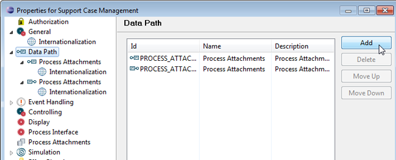
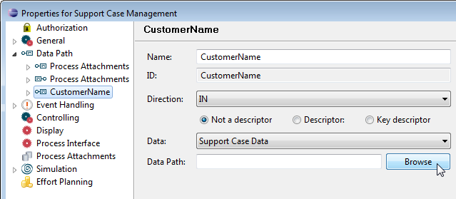
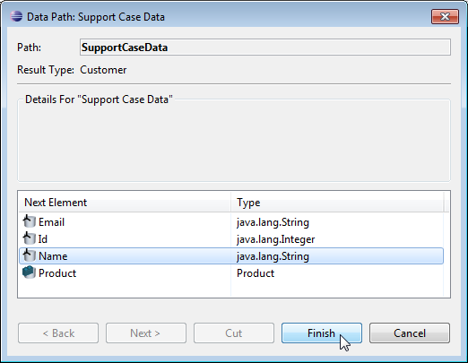
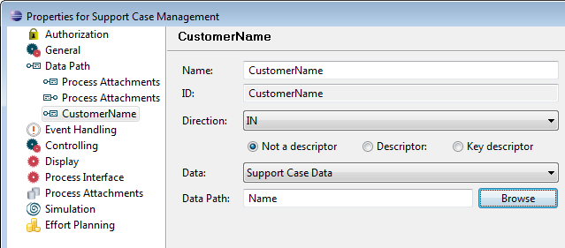
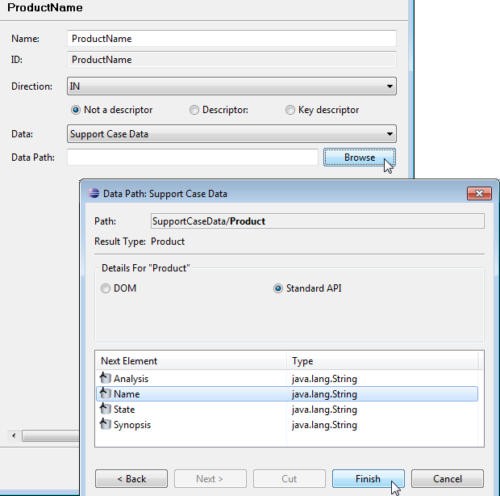
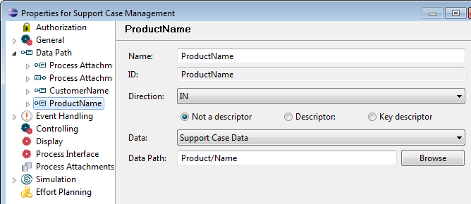

Adding Process Data Paths
We will now add process data paths to our Support Case Management
process, which we can use to create correspondence in the Stardust portal
later.
Creating a Data Path for Customer Name
To create a data path for using the customer name:
- Open the properties page of the Support Case Management
process definition.
- In section Data Path click Add.

- Enter ID and name CustomerName.
- Select data SupportCaseData.
- Leave Direction as IN.
- Click Browse to browse to the data path.

- Select Name and Finish.

Now the data path should look like the following:

Figure: IN Data Path for Customer Name
Creating a Data Path for Product Name
In the same way create a new data path with ID and name
ProductName:
- Select data SupportCaseData.
- Leave Direction as IN.
- Click Browse to browse to the data path.
- Select Product and Next.
- Select Name and Finish.

Now the data path should look like the following:

Figure: IN Data Path for Customer Name